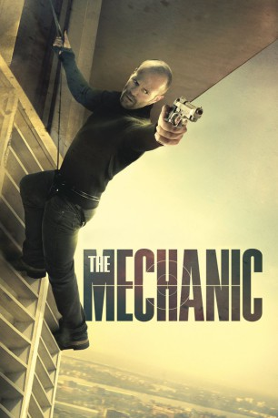

#1029 The Mechanic
 gesehen am 29.09.2016
gesehen am 29.09.2016
 
 IMDB-Wertung: 6.6 / 10
IMDB-Wertung: 6.6 / 10  Metascore: 49
Metascore: 49 
Arthur Bishop ist ein "Mechaniker". So nennt man speziell ausgebildete Auftragskiller mit strengem Verhaltenskodex, die ihre Arbeit kühl und distanziert versehen. Als jedoch sein einstiger Mentor und bester Freund Harry ermordet wird, wird die Sache für Arthur persönlich: Der Verantwortliche soll sterben. Als Harrys Sohn Steve von Arthur ausgebildet werden will, stimmt der notorische Einzelgänger zu und stellt bald fest, dass es ihm mit einem Schüler an der Seite schwer fällt, seinen Job wie gewohnt auszuführen.
Jahr: 2011
Dauer: 93 Minuten
FSK: 18
Land: USA Studio: CBS FilmsTonspuren: DTS - ,
Untertitel:
Auflösung: 1080p (1920x800) Größe: 6993 MB
Genre: Action, Krimi, Thriller
Regisseur:  Simon West
Simon West
Drehbuch: Richard Wenk, Lewis John Carlino, Lewis John Carlino
Soundtrack: Mark Isham
Darsteller:
 Jason Statham als Arthur Bishop
Jason Statham als Arthur Bishop Ben Foster als Steve McKenna
Ben Foster als Steve McKenna Tony Goldwyn als Dean
Tony Goldwyn als Dean Donald Sutherland als Harry McKenna
Donald Sutherland als Harry McKenna Jeff Chase als Burke
Jeff Chase als Burke Mini Anden als Sarah
Mini Anden als Sarah James Logan als Jorge Lara
James Logan als Jorge Lara Eddie J. Fernandez als Lara's Guard
Eddie J. Fernandez als Lara's Guard John McConnell als Vaughn
John McConnell als Vaughn- Christa Campbell als Kelly
 Lara Grice als Mrs. Finch
Lara Grice als Mrs. Finch Lance E. Nichols als Henry
Lance E. Nichols als Henry J.D. Evermore als Gun Runner
J.D. Evermore als Gun Runner- Dawn Neufeld als News Reporter #1
- William Scharpf als Dean's Driver
- John Teague als Ney
 David Leitch als Sebastian
David Leitch als Sebastian- LaTeace Towns-Cuellar als Lara's Girl #2
 Stuart Greer als Ralph
Stuart Greer als Ralph Katarzyna Wolejnio als Maria
Katarzyna Wolejnio als Maria Danny Cosmo als Peasant
Danny Cosmo als Peasant Beau Brasseaux als Chicago S.W.A.T , uncredited
Beau Brasseaux als Chicago S.W.A.T , uncredited Grant Case als Bar Patron , uncredited
Grant Case als Bar Patron , uncredited- Elise Fyke als Bus Passenger , uncredited
 Geraldine Glenn als Staff / Villager , uncredited
Geraldine Glenn als Staff / Villager , uncredited- Nick Jones Jr. als Airport Traveler , uncredited
 Matt McColm als Bodyguard , uncredited
Matt McColm als Bodyguard , uncredited- Starlette Miariaunii als TWC Evacuee , uncredited
 Aaron Saxton als Swat , uncredited
Aaron Saxton als Swat , uncredited- Simon West als Dean's Impaled Henchman , uncredited
 Olga Wilhelmine als Office Employee , uncredited
Olga Wilhelmine als Office Employee , uncredited- Joshua Bridgewater als Car Jacker
- Joel Davis als Husband
- Mark Nutter als Mr. Finch
- Ardy Brent Carlson als Bell Hop
- Ada Michelle Loridans als Finch's Daughter
- Linnzi Zaorski als Jazz Club Singer
- Molly Rosenblatt als News Reporter #2
- Jen Ortega als Lara's Girl #1
- Paul Abraham als Shuttle Driver
 David Dahlgren als Dr. X
David Dahlgren als Dr. X- Larrel France als Vaughn's Intern
- Derek Schreck als Security Guard
- Choop als 'Arthur' the Dog
- Dane Brown als Bar Patron , uncredited
- Joshua Cardenez als Jorge Lara Guard at Pool , uncredited
- Kurt DeVille als Steve's Barracade / Bar , uncredited
- Mark Krutov als Dean's Security , uncredited
- Gustavo I. Ortiz als Coffee Shop / Bar Patron , uncredited
- James Rawlings als Dean's Men , uncredited
Datei: X:\FSK18-Collections\Mechanic\Mechanic, The (2011, FSK18, 1920x800).mkv seit 08.05.2015
Festplatte: FSK18
 Alle Filme aus Gruppe 'FSK18-Collections\Mechanic'
Alle Filme aus Gruppe 'FSK18-Collections\Mechanic'